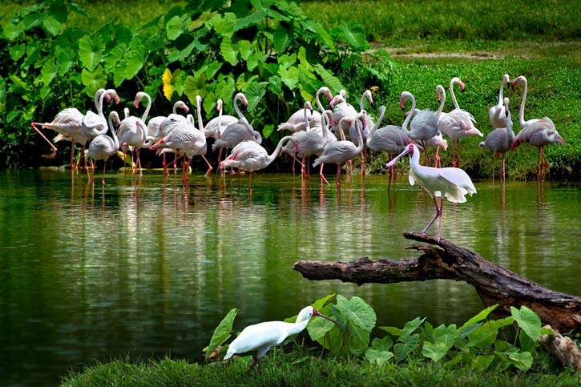

ENVIRONMENTAL SCIENCE
(1+1)

Select the lecture topic...
Lec 01 -
Scope and Importance of ...
Lec 02 -
Nature Resourses: Renew...
Lec 03 -
Nature Resources: Forest, En...
Lec 04 -
Ecosystems: Definition, Con...
Lec 05 -
Producers, Consumers and ...
Lec 06 -
Bio-diversity: Definition, Clas...
Lec 07 -
Environmental Pollution: Cau...
Lec 08 -
Global Warming and Climate ...
Lec 09 -
Causes, Effects
and Control ...
Lec 10 -
Causes, Effects and Control ...
Lec 11 -
Causes, Effects and Control ...
Lec 12 -
Causes, Effects and Manag...
Lec 13 -
Disaster Management, Flood...
Lec 14 -
Social Issues and the Environ...
Lec 15 -
The Environment Protection ...
Lec 16 -
National and State Level Org...
Lec 17 -
Woman and Child Welfare ...
Presentations